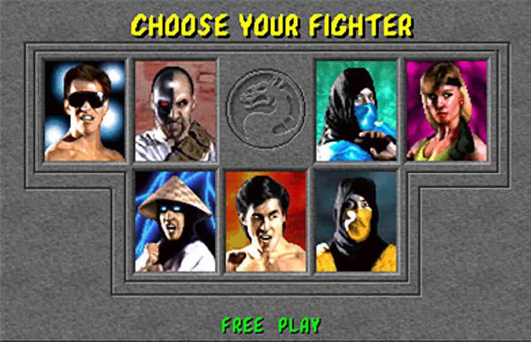
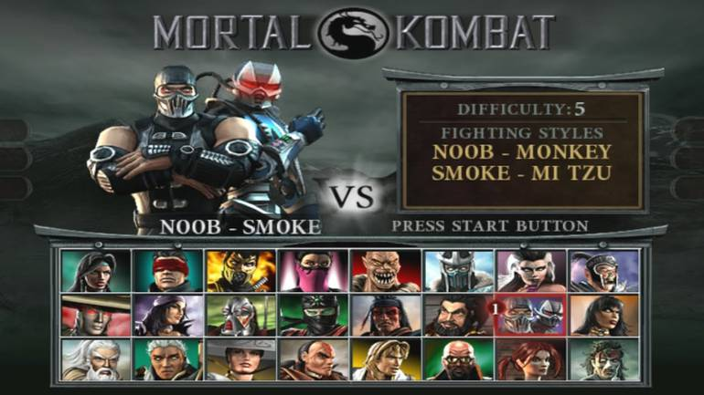
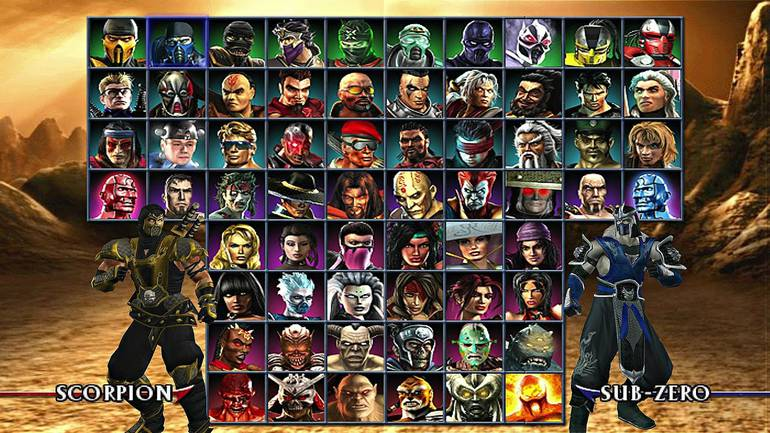
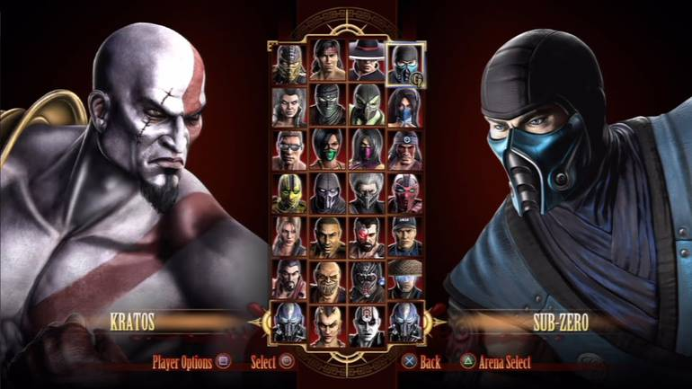
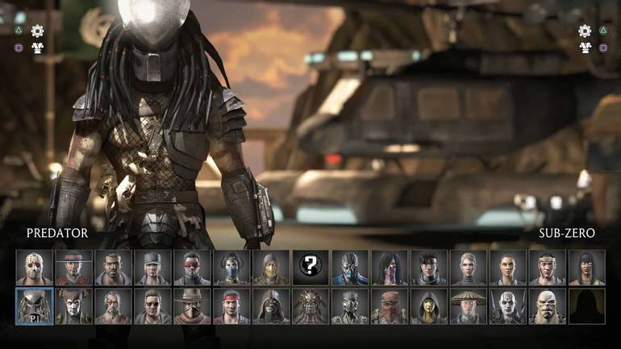
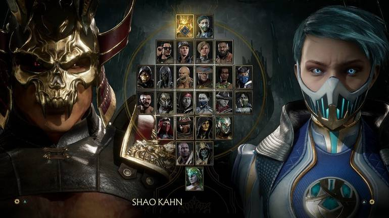

| Nome | Sinopse |
|---|---|
Mortal Kombat: Special Forces (2000) |
Antes do primeiro torneio da franquia, Jax já lutava contra Kano em uma aventura própria. É verdade que esse jogo não fez sucesso algum, mas continua sendo parte da mitologia, então, aqui está. |
Mortal Kombat Mythologies: Sub-Zero (1997) |
O jogo de aventura do Sub-Zero é igualmente lembrado com certo desdém pela maior parte dos fãs e, surpreendentemente, também está no começo da cronologia da série. Situado também antes do primeiro torneio, Mythologies: Sub-Zero mostra a jornada de Bi-Han como um peão manipulado por deuses. Foi aqui que vimos, pela primeira vez, a morte do Hanzo Hasashi original. |
| Mortal Kombat (1992)  |
Chegamos, finalmente, ao primeiro torneio. Aquele do jogo que deu início a tudo. Foi aqui que Liu Kang derrotou Shang Tsung pela primeira vez e despertou a ira de Shao Kahn, que organizaria um novo torneio depois de pouco tempo. |
Mortal Kombat 2 (1993).jpg) |
O primeiro torneio a trazer Shao Kahn como chefão aparece em quarto lugar na cronologia da série. No segundo jogo, Liu Kang derrotou Shao Kahn pela primeira vez e o mundo conheceu um novo Sub-Zero: Kuai Liang. |
Mortal Kombat 3 e versões (1995).png) |
Depois de ser derrotado duas vezes, o Imperador de Outworld, Shao Kahn, decidiu quebrar as regras do Mortal Kombat e invadir a Terra sob o pretexto de ir recuperar a rainha Sindel, recentemente ressuscitada no território que ele gostaria de invadir. Apesar de algumas baixas, como a morte de Johnny Cage, a Terra venceu. Novamente, Liu Kang moeu a cara de Shao Kahn na porrada. |
Mortal Kombat: Deadly Alliance (2002).jpg) |
Depois das derrotas dos respectivos mestres, Shang Tsung e Quan Chi formaram uma aliança que agia fora das regras do Mortal Kombat. Juntos, eles, finalmente, conseguiram matar o guerreiro mais forte do Reino da Terra: Liu Kang. Era o começo de um período sombrio. Aqui, os vilões vencem — e somente Raiden continua de pé até o final para proteger a Terra. |
Mortal Kombat 4 e versões (1997).webp) |
Depois de Shao Kahn ser convidado a deixar o Reino da Terra em paz duas vezes, Shinnok e Quan Chi decidiram tentar a sorte. Raiden, Liu Kang e os demais, novamente, protegeram a Terra e expulsaram os invasores. |
| Mortal Kombat: Deception (2004)  |
Durante a luta de Raiden, Shang Tsung e Quan Chi, um antigo líder de Outworld chamado Onaga, também conhecido como o Rei Dragão, ressuscitou. Para tentar eliminar essa nova ameaça, Raiden se sacrificou causando uma grande explosão. O sacrifício de Raiden, agora um deus corrompido, foi em vão. Somente Shujinko, novo protagonista da franquia, poderia derrotar Onaga de uma vez por todas. |
| Mortal Kombat: Armageddon (2006)  |
De alguma forma, absolutamente todos os lutadores voltaram à vida para um último Mortal Kombat em Armageddon. A princípio, Taven, protagonista do modo História, seria o grande vencedor. No entanto, Mortal Kombat 9, lançado em 2011, mostrou que Raiden (de novo) e Shao Kahn foram os últimos sobreviventes da guerra. Inclusive, o último jogo da cronologia clássica de Mortal Kombat termina com a vitória de Shao Kahn, que se torna o ser supremo do universo. O mal venceu. Armageddon foi o último jogo da cronologia clássica de Mortal Kombat. A partir de agora, entramos na cronologia que começou com o reboot de 2011. |
| Mortal Kombat (2011)  |
Raiden, diante da derrota inevitável em Armageddon, enviou uma mensagem para si mesmo no passado: "Ele precisa vencer." É assim que começa Mortal Kombat, o reboot lançado em 2011 ao qual muitos fãs se referem como Mortal Kombat 9. A história reimagina os três primeiros jogos da série. No final, Raiden salva o Reino da Terra, mas acaba matando Liu Kang por acidente. |
| Mortal Kombat X (2015)  |
Anos depois de Mortal Kombat 9, Quan Chi e Shinnok tentam invadir o Reino da Terra, mas são derrotados pelas Forças Especiais. Sob liderança de Johnny Cage e Sonya Blade, toda uma nova geração de guerreiros é treinada. A protagonista da vez é Cassie Cage, filha de Johnny e Sonya, que, no final, derrota uma versão inédita do Shinnok. |
| Mortal Kombat 11 (2019)  |
Com o Reino da Terra a salvo mais uma vez, Kronika, a guardiã do tempo, decide intervir. De acordo com ela, Raiden havia violado a linha do tempo que havia sido determinada para a Terra. Kronika teletransporta heróis e vilões do passado, incluindo Liu Kang e Shao Kahn, para o presente. O objetivo dela é fazer de tudo para eliminar os atuais protetores do Reino da Terra. O que ela não esperava, entretanto, era que Liu Kang se mostrasse um oponente tão persistente. Ressuscitado, Liu Kang salva o universo mais uma vez. |
Mortal Kombat 11: Aftermath (2020).jpg) |
Depois de Liu Kang derrotar Kronika, Shang Tsung aparece e diz que nem tudo estava resolvido. O feiticeiro volta no tempo e engana todos os personagens até o final da história, acreditando que conseguirá subsituir Liu Kang como o novo ocupante do cargo de Kronika. Shang Tsung e Liu Kang se enfrentam pela última vez no final da história, que tem dois finais possíveis. Não há informação sobre qual é o final canônico. |
Mortal Kombat 1 (2023) |
A história de Mortal Kombat 1 dá continuidade aos eventos de Aftermath, a expansão de Mortal Kombat 11. Na ocasião, Liu Kang se torna um Deus após absorver os poderes de Raiden para derrotar Kronika, que controlava a Ampulheta responsável por moldar o tempo. |